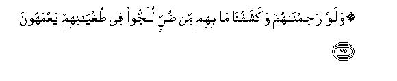
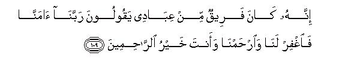

بسم الله الرحمن الرحيم
Sayyid Abul Ala Maududi - Tafhim al-Qur'an - The Meaning of the Qur'an
 23.
Surah Al Muminoon (The Believers)
23.
Surah Al Muminoon (The Believers)
The surah takes its name, Al-Mu'minun, from the first verse.
Both its style and theme indicate that it was revealed during the middle stage of Prophethood at Makkah. Reading between the lines, one feels that a bitter conflict had begun between the, Holy Prophet and the disbelievers of Makkah, though the persecution by them had not yet become tyrannical. It appears that the surah was sent down during the climax of the "Famine" in Makkah (vv. 75-76), which according to authentic traditions occurred during the middle stage of Prophethood. Moreover, according to a tradition related by 'Urwah bin Zubair, Hadarat Umar who had embraced Islam by that time, said, "This Surah was revealed in my presence and I myself observed the state of the Holy Prophet during its revelation. When the revelation ended , the Holy Prophet remarked, 'On this occasion ten such verses have been sent down to me that the one who measures up to them, will most surely go to Paradise'. Then he recited the initial verses of the surah." (Ahmad, Tirmizi, Nasai, Hakim).
The central theme of the surah is to invite the people to accept and follow the Message of the Holy Prophet and the whole Surah revolves round this theme.
The fact that the people who have accepted the Message of the Holy Prophet have started acquiring such and such noble qualities of character is a practical proof of the truth of the Message. 1 - 11
In this passage, attention has been drawn to the creation of man and the universe to impress that the whole universe including man's own self, is a clear proof of the truth of the Holy Prophet's Message, which invites the people to accept Tauhid and life in the Hereafter. 12 - 22
Then the stories of the former Prophets and their communities have been cited as historical evidences of the truth of the Message. They prove the following things :
The objections and the doubts that the antagonists are raising against the Message of Muhammad (Allah's peace be upon him) are not new. These were raised against the former Prophets also whom they themselves acknowledged as Messengers of Allah. Therefore they should learn a lesson from their history and judge for themselves whether the Prophets were in the right or their objectors.
The Message of Tauhid and the Hereafter that Muhammad (Allah's peace be upon him) is conveying is the same as was brought by the former Prophets; therefore they should accept it.
They should take a warning from the consequences met by those communities who rejected the Message of their Prophets.
All the Prophets brought one and the same religion from Allah and they all belonged to one and the same community. All other religions were invented by the people themselves and none of them is from Allah. 23 - 54
After relating the stories of the Prophets, a fundamental principle has been enunciated: Success and prosperity in the worldly life is not a criterion of success in the sight of Allah. If some persons (or a person) are enjoying prosperity, wealth, power and the like in this world, it does not mean that they are favorites of Allah. Likewise, the poverty and adversity of other people is not a proof that Allah is displeased with them. The real criterion is Faith (or lack of it). This declaration was needed because the antagonists of the Holy Prophet were the great chiefs of Makkah, who (and their followers) were deluded by their own prosperity that God and their deities were well pleased with them. On the other hand, they argued, the fact that Muhammad (Allah's peace be upon him) and his followers were indigent and in a state of helplessness, was a clear proof that Allah was not pleased with them, and they were under the curse of their deities. 55 - 67
In this passage different arguments have been used to convince them that Muhammad (Allah's peace be upon him) was a true Prophet of Allah. Then they have been told that the Famine (vv. 75 - 76) was merely a warning and therefore "it is better for you to mend your ways; otherwise you will be visited by a terrible scourge." 68 - 77
Again they have been invited to observe the Signs in the universe and in their own selves because these are clear proofs of the truth of the Message of the Holy Prophet. 78 - 95
The Holy Prophet has been told not to adopt any wrong way in retaliation to counteract the evil ways of the enemies, and to guard against the incitement of Satan. 96 - 97
In this concluding passage, the enemies of the truth have been warned that they shall have to render an account in the Hereafter and bear the consequences of their persecution of the Believers; therefore they should mend their ways. 98 - 118

In the name of Allah, the Compassionate, the Merciful.
[1-11] Most certainly those Believers have attained true success1 who2 perform their Salat with humility:3 who refrain from vain things:4 who spend their Zakat dues in appropriate ways:5 who guard their private parts scrupulously,6 except with regard to their wives and those women who are legally in their possession, for in that case they shall not be blame-worthy, but those, who go beyond this (in lust for sexual desires), shall be transgressors:7 who are true to their trusts and their promises,8 and who strictly guard their Prayers.9 These are the heirs who will inherit Paradise10 and dwell therein for ever.11

[12-16] We created man from an essence of clay: then turned him into a sperm-drop in a safe place: then changed the sperm drop into a clot of blood and the clot into a piece of flesh: then turned the piece of flesh into bones: then clothed the bones with flesh,12 and then brought him forth as quite a different creation (from the embryo).13 So blessed is Allah, the best of all creators.14 Then after this you shall all die: then most surely you shall' be raised up on the Day of Resurrection.
[17-20] And We have made seven paths above you15 We were not novice in the art of creation.16 And We sent down rain from the sky in due measure and lodged it in the earth17 and We are able to take it away as We will.18 Then with that rain We caused vineyards and palm groves to spring up. In those gardens there are delicious fruits19 from which you obtain sustenance.20 And We created the tree which grows on Mount Sinai,21 it gives oil and is used as food also by those who like to eat it.
[21-22] In fact, there is a lesson for you in the cattle: We give you as a drink of that which is in their bellies,22 and besides this you get other benefits from them: you eat their flesh and are carried from place to place on them and on ships.23
[23-29] We sent Noah to his people:24 he said, "O my people, worship Allah alone; you have no other deity than Him. Are you not afraid (of shirk)?"25 Those of the chiefs of his people, who had rejected his Message, said, "This person is no more than a human being like yourselves.26 By this, he merely intends to obtain superiority over you.27 Had Allah willed, He would have sent down angels.27a Since the time of our forefathers we have never heard (that a human being came as a Messenger). Obviously this man is possessed: wait a little more: (may be he is cured)" . Noah prayed, "Lord, help me against these people for they have treated me as an impostor".28 At this, We revealed to him: Build an ark under Our supervision, according to Our instructions. Then, when Our Command comes and "at-Tannur"29 begins to boil up, take aboard a pair of every species of animals, and also the members of your own family except those against whom the judgment has already been passed; and do not plead with Me for the workers of iniquity, for they are doomed to be drowned. Then, when you have boarded the ark along with your companions, say, "Praise be to Allah Who has delivered us from the wicked people",30 and pray, "Lord, let my landing from this ark be at a blessed place, for Thou art the best of harborers".31
[30] There are many Signs in this story,32 and We always put people to the test.33
[31-38] After them We raised a people of another generation.34 Then We sent to them a Messenger from among themselves, (who said,) "Worship Allah alone: you have no other deity than Him. Are you not afraid (of disbelief)?" Those of the chiefs of his people, who had rejected the Message and denied the life in the Hereafter and whom We had given prosperity in this worldly life,35 said, "This person is no more than a human being like yourselves, for he eats of what you eat and drinks of what you drink. Now if you submit to a human being like yourselves, you shall indeed be losers.36 What! does he tell you that after you are dead and turned into dust and become mere bones, you shall be brought out alive (from graves)? Impossible! Just impossible is that which you are being threatened with. There is no other life than this worldly life. We will live here and die here and will not be raised up again. This man is merely an impostor, who is inventing lies in the name of Allah,36a and we are not going to believe in what he says".
[39-41] At this the Messenger prayed, "Lord, help me against these people, who have treated me as an impostor". In answer, it was said ,"The time is nearing when they shall be remorseful". In due course a great scourge overwhelmed them in all justice and We cast them away like scum.37 So away with the wicked people!
[42-44] After them We raised other peoples. No people ceased to exist before its appointed term nor could any people outlive it. Then We sent Our Messengers in succession. Whenever a Messenger came to his people, they treated him as an impostor: so We went on destroying one people after the other till We made them mere legends.-Accursed be those who do not believe.38


[45-49] Then We sent Moses and his brother Aaron with Our Signs and a clear Authority39 to Pharaoh and his nobles. But they received them with arrogance, for they were very haughty people.40 They said, "What! should we believe in these two men who are human beings like ourselves40a and whose people are our bondsmen?"41 So they treated them as impostors and incurred destruction.42 As regards Moses, We gave him the Book so that the people might be guided by it.
[50] And We made the son of Mary and his mother a Sign43 to mankind and We gave them shelter on a plateau where they could have peace, and which was watered by running springs.44
[51-52] O Messengers,45 eat of pure things and do righteous deeds,46 for I am fully aware of what you do. And you all belong to one and the same community, and I am your Lord: so fear Me.47
[53-54] Yet afterwards people divided themselves into different sects, and each sect rejoices in what it has48 Well, leave them deeply involved in their heedlessness up to an appointed term.49
[55-63] Do they think that, by continuing to provide them with wealth and children, We are solicitous for their welfare? Nay, they do not understand the reality of the matter.50 Those who feel the fear of their Lord;51 who believe in the Signs of their Lord;52 who do not associate anyone with their Lord;53 who give whatever they give, and whose hearts are filled with awe by the very idea that they shall have to return to their Lords;54 they indeed are the people who work for their true welfare and try to be the first to attain it, We do not burden anyone with more than he can bear.55 And We have a book which tells accurately (about everyone),56 and the people will in no case be treated unjustly.57 But these people are heedless of this,58 and their deeds are also of a different nature (from those mentioned above).
[64-67] They will continue their misdeeds till We bring punishment on the epicureans among them,59 then they will begin to bellow.60 Now61 stop your groaning. You will get no help from Us this Day; for when My Revelations were recited to you, you turned on your heels (hearing the voice of the Messenger).62 In your arrogance you paid no heed to him, ridiculed him in your meeting places63 and talked nonsense about him.

[68-71] Have the disbelievers never considered the Word?64 Or, has he brought something the like of which had not come to their forefathers?65 Or, did they not know their Messenger well that they fight shy of him (as if he were a stranger)?66 Or, are they really convinced that he is possessed (by a jinn)?67 Nay! the real thing is that he has brought the Truth and most of them have aversion to the Truth.-And had the Truth followed their lusts, the whole system of the heavens and the earth, and of all who dwell in them, would have been disrupted.68 Nay, We have brought them admonition for their own good, but they are turning away from it.69
[72-74] Are you demanding some recompense from them? Allah's recompense is best for you, for He is the best Providence.70 As a matter of fact, you are inviting them to the Straight Path, but it suits those, who do not believe, in the Hereafter, to deviate from the Straight Path.71


[75-77] If We take compassion on them and relieve them of their affliction, they will persist blindly in their rebellion:72 for even now, when they are suffering from a torment, they have not bowed before their Lord nor humbled themselves. However, when We will smite them with a dreadful scourge, you will see that they will despair of all good and become desperate.73
[78-83] It is Allah Who has endowed you with the faculties of hearing and seeing and given you hearts to think, but you do not show any gratitude.74 It is He Who has scattered you in the earth, and before Him you shall all be mustered. It is He Who gives life and ordains death, and controls the alternation of the night and the day.75 Can you not understand this?76 Nay! these people say what their forefathers said before them. They say, "Shall we be raised up again, when we have turned into dust after death and become mere bones? We have heard many such threats and so did our forefathers before us. These are nothing but ancient tales".77
[84-85] Say to them, "Tell me, if you know, whose is the earth and all who dwell in it?" They will say, "Allah's". Ask them, "Then why do you not understand this"?78
[86-92] Say to them, "To whom do the seven heavens and the Glorious Throne belong?" They will say, "To Allah"79 Say, "Then why do you not fear Him".80 Say to them, "Tell me, if you know, whose is the Sovereignty81 over everything? And who is that Being who gives protection while none can give protection against Him?" They will surely reply, "This power belongs to Allah." Say, "How then are you so bewitched?"82 The fact is that We have brought the Truth before them and undoubtedly these people are liars.83 Allah has no offspring,84 and there is no other deity as a partner with Him. Had it been so, every deity would have become an independent ruler over its creation; moreover, in that case, they would have tried to override one another.85 Exalted is Allah and free from the sort of things they attribute to Him. He has full knowledge of all that is open and hidden,86 and He is far above the shirk these people invent.
[93-95] O Muhammad, pray, "Lord, if You inflict, during my presence among them, that punishment with which they are being threatened, then, O my Lord, do not include me among these unjust people.”87 And the fact is that We have the power to make you a witness of what they are being threatened with.

[96-98] O Muhammad, repel evil with that which is best: We are fully aware of what they utter against you. And pray, "Lord, I seek refuge in You from the promptings of the satans; more than that: I seek refuge in You, my Lord, even from their coming near me"88

[99-110] (Those people will not desist from their doing) till when death comes to any one of them, he will say, "Lord, send me back to the world89 which I have left: I hope I will now do righteous deeds."90 By no means!91 it is a mere saying that he is uttering:92 for now there is a barrier between the dead (and the world which they have left) up to the Day93 when they shall be raised up again. Then, when the Trumpet will be blown, all (worldly) relations between them shall cease to function and they will not inquire about one another.94 Then only those whose Scales will be heavy,95 will attain success; and those, whose scales will be light, will be the people who made themselves liable to loss96 they shall abide in Hell for ever. The "Fire" will scorch their faces so as to expose their jaws97 (It will be said to them,) "Are you not the same people, who treated as lies My Revelations, when they were recited to you?" They will say, "Our Lord, our bad luck prevailed over us, and we were, indeed, erring people. Our Lord, now take us out of this place: after this, if we be guilty of such a thing, we shall indeed be wrong-doers." In answer to this, Allah will say, "Get away from here, remain herein and do not speak to Me.98 For, you are the very same people, who made fun of some of Our servants when they prayed to Us, `Our Lord, we have believed: so forgive us and have mercy, on us, for You are the Most Merciful of all who show mercy? So much so that in your obduracy, you even forgot My very existence, and went on scoffing at them.
[111-115] Today I have recompensed them for their fortitude, and they have triumphed over you.99 Then Allah will inquire from them, "For how many years did you live on the Earth?" They will say, "We stayed there for a day or for part of a day.100 You may inquire from those who kept account." It will be said, "Well, you know now that you stayed there for a little while only. What a pity! you did not realize it then.101 Did you think that We had created you without any purpose,102 and that you would never be brought back to Us?"
[116-117] So Exalted is Allah,103 the and real Sovereign. There is no god other than He: He is the Lord of the Glorious Throne. Therefore, if some one invokes any other deity along with Allah, whereof he has no proof,104 he shall have to give an account to his Lord.105 Such disbelievers can never attain "success."106
[118] O Muhammad, say, "Lord, forgive and have mercy! You are the most Merciful of all, who show mercy".107
1"Believers", who have attained true success, are those who have accepted the Message of Muhammad (Allah's peace be upon him), and have acknowledged him as their guide and followed the way of life taught by him.
This assertion cannot be fully appreciated unless one keeps in view the background in which it was made. On the one hand, there were the well-to-do and prosperous chiefs of Makkah, the opponents of Islam, whose business was thriving and who were enjoying every good thing of life, and on the other hand, there were the followers of Islam majority of whom were either poor from the beginning, or had been reduced to poverty by ruthless antagonism to Islam. Therefore, the assertion, "Most certainly the Believers have attained true success", with which the discourse begins, was meant to tell the disbelievers that the criterion of success and failure that they had in mind was not correct. It was based on misconceptions besides being transitory and limited in nature: it led to failure and not true success. On the contrary, the followers of Muhammad (Allah's peace be upon him), whom they regarded as failures, were truly successful, because by accepting the invitation to the Right Guidance given by the Messenger of Allah, they had struck a bargain which would lead them to true success and everlasting bliss in this world as well as in the Hereafter, whereas by rejecting the Message the opponents had incurred loss and would meet with the evil consequences both in this world and in the next.
This is the main theme of the Surah and the whole discourse, from the beginning to the end, is meant to impress the same.
2The noble characteristics of the Believers pointed out in vv. 2-9 are the arguments to prove the above assertion. In other words, it has been stated that people with such and such traits and qualities only can attain true success in this world and in the Hereafter.
3Khashi`un in the Text is from khushu (to bow down, to express humility) which is a condition of the heart as well as of the body. Khushu' of the heart is to fear and stand in awe of a powerful person, and khushu ` of the body is to bow one's head and lower one's gaze and voice in his presence. In Salat one is required to show khushu ` both of the heart and of the body, and this is the essence of the Prayer. It has been reported that when the Holy Prophet once saw a person offering his Prayer as well as playing with his beard, he remarked: "Had he khushu ` in his heart, his body would have manifested it. "
Though khushu ` is actually a condition of the heart, as stated by the above tradition, it is manifested by the body as a matter of course. The Shari `ah has enjoined certain etiquette which, on the one hand, helps produce khushu ` in the heart, and on the other, helps sustain the physical act of the Prayer in spite of the fluctuating condition of the heart. According to this etiquette, one should neither turn to the right or left, nor raise one's head to look up: one may, however, look around from the corner of the eye, but as far as possible, one must fix the gaze on the place where the forehead would rest in prostration; one is also forbidden to shift about, incline side ways, fold the garments or shake off dust from them. It is also forbidden that while going down for prostration, one should clean the place where one would sit or perform prostration. Similarly it is disrespectful that one should stand stuffy erect, recite the verses of the Qur'an in a loud resounding voice, or sing them, or belch or yawn repeatedly and noisily. It has also not been approved that one should offer the Prayer in a hurry. The injunction is that each article of the Prayer should be performed in perfect peace and tranquility, and unless one article has been completely performed, the next should not be begun. If one feels hurt by something during the Prayer, one may cast it aside by one hand, but moving the hand repeatedly or using both the hands for the purpose is prohibited. with this etiquette of the body, it is also important that one should irrelevant things during the Prayer. If thoughts come to the mind intention, it is a natural human weakness, but one should try one's
Along avoid thinking without one's utmost that the mind and heart are wholly turned towards Allah, and the mind is in full harmony and tune with the tongue, and as soon as one becomes conscious of irrelevant thoughts one should immediately turn the attention to the Prayer.
4Literally, laghv is anything nonsensical, meaningless and vain, which is in no way conducive to achieving one's goal and purpose in life. The Believers pay no heed to such useless things and they show no inclination or interest for them. If by chance they see such things being indulged in, they keep away and avoid them scrupulously, or treat them with utmost indifference. This attitude has been described in Al-Furqan (XXV): 72, thus: " ... if they have to pass by what is vain, they pass by like dignified people."
This is indeed one of the outstanding characteristics of the Believer. He is a person who feels the burden of responsibility at all times; he regards the world as a place of test, and the life as the limited time allowed for the test. This feeling makes him behave seriously and responsibly throughout life just like the student who is taking an examination paper with his whole mind and body and soul absorbed in it. Just as the student knows and feels that each moment of the limited time at his disposal is important and decisive for his future life, and is not inclined to waste it, so the Believer also spends each moment of his life on works which are useful and productive in their ultimate results. So much so that even in matters of recreation and sport, he makes a choice of only those things which prepare him for higher ends in life and do not result in mere wastage of time. For him time is not something to be killed but used profitably and productively.
Besides this, the Believer is a person who possesses a right thinking mind, pure nature and fine taste: he has no inclination to indecent things: he can talk useful and healthy things but cannot indulge in idle talk: he has a fine taste of humor, but is not given to jesting, joking, ridicule, etc. nor can he endure dirty jokes and fun. For him a society in which the ears are never immune from abusive language, back-biting, slander; lying, dirty songs and indecent talk is a source of torture and agony. A characteristic of the promised Paradise is: "therein you will not hear anything vain or useless."
5The word Zakat literally means purification and development-to help something grow tip smoothly and develop without obstruction. As an Islamic term, it implies both the portion of wealth taken out for the purpose of purifying the rest of wealth and the act of purification itself. The words of the original Text mean that the Believer constantly practices purification. Thus the meaning is not confined to the paying off of Zakat dues only but it is extended to self-purification which includes purification of morals as well as wealth, property and life in general. Then it does not mean purification of one's own self, but includes the purification of the lives of other people as well. So the verse means: "The Believers are the people who purify themselves as well as others." This thing has been stated at other places in the Qur'an -also, for instance: "Successful is he who practiced -purification and remembered his Lord and prayed." (LXXXVII: 1415), and: "Successful is he who purified himself and failure is he who corrupted it." (XCI: 9-10). But this verse is more comprehensive in meaning because it stresses the purification of both society and one's own person.
6They are modest in every sense of the word. They are free from sex abuse and sex perversion. They are so modest that they even conceal those parts of their bodies which the Law forbids to expose before others. For explanation, see E.N.'s 30 and 32 of An-Nur (XXIV).
7This is a parenthesis which is meant to remove the common misunderstanding that sex desire is an evil thing in itself and satisfying it even in lawful ways is not desirable, particularly for the righteous and godly people. This misunderstanding would have been strengthened had it been only said that the Believers guard their private parts scrupulously, because it would have implied that they live unmarried lives, away from the world, like monks and hermits. Therefore a parenthesis has been added to say that there is nothing wrong in satisfying the sex desire in lawful ways. What is evil is that one should transgress the prescribed limits for satisfying the sex desire.
Here are briefly a few injunctions which are based on this parenthetical clause:
(1) Two categories of women have been excluded from the general command of guarding the private parts: (a) wives, (b) women who are legally in ode's possession, i.e. slave-girls. Thus the verse clearly lays down the law that one is allowed to have sexual relations with one's slave-girl as with one's wife. the basis being possession and not marriage. If marriage had been the condition, the slave-girl also would have been included among the wives, and there was no need to mention them separately. Some modern commentators, who dispute the permissibility of having sexual relations with the slave-girl, argue from An-Nisa' (IV) : 25 to prove that one can have sexual relations with a slave-girl only after entering wedlock with her, because that verse enjoins that if a person cannot afford to marry a free Muslim woman, he may marry a Muslim slave-girl. But these commentators have a strange characteristic: they accept a part of a verse if it suits them, but conveniently ignore another part of the same verse if it goes against their wish and whim. The law about marrying the slave-girls as enunciated in IV :25 reads: "....you may marry them with the permission of their guardians and give them their fair dowries." Obviously the person under reference here is not the master of the slave girl himself but the person who cannot afford to marry a free Muslim woman, and therefore , wants to marry a slave-girl, who is in the possession of another person. For if the question had been of marrying one's own slave-girl, who would then be the "guardian" whose permission would have to be sought? Then, the interpretation they give of this verse contradicts other verses dealing with the same subject in the Qur'an. A sincere person who wants to understand the Qur'anic law in this regard should study An-Nisa' (IV); 3, 25; AI-Ahzab (XXXIII): S0, 52, and Al-Ma`arij (LXX): 30 together with this verse of Al-Mu'minun. (For further explanation, see E.N. 44 of An-Nisa).
(2) The law prescribed in the parenthesis is only applicable to men as is clear from the Text. A woman in the time of Hadrat `Umar did not understand this fine point of the language and indulged in sexual gratification with her slave. When her case was brought before the consultative body of the Companions, they gave the unanimous decision: "She misinterpreted the Book of Allah" Nobody should entertain the doubt that if this exception is meant for the men only, how could then the husbands become lawful for the wives? This doubt is unjustified because when the husbands are exempted from the command of guarding their private parts in regard to their wives, the wives automatically stand exempted from the command with regard to their husbands, and there is no nerd to grant them exemption separately. Thus the command of exemption remains applicable and effective only in respect of the man and the woman legally in his possession, and the slave becomes unlawful for the woman possessing him. The wisdom of why the slave has been forbidden to the woman is that he can only satisfy her sexual desire but cannot become guardian and governor of herself and her household, which leaves a serious flaw in the family life.
(3) The sentence ".... but those who go beyond this (in lust for sexual desire), shall be transgressors" has made satisfaction of sex desire in other ways unlawful, whether it be through fornication, homosexuality, sex gratification with animals, or some other means. The jurists differ only with regard to masturbation. Imam Ahmad bin Hanbal regards it as lawful, but Imams Malik and Shafi`i regard it as absolutely unlawful: and though the Hanafites also regard it as unlawful, they give the opinion that if a person indulges sometimes in masturbation under the fit of passion, it is expected that he will be forgiven the error.
(4) Some commentators have proved the prohibition of Mut ah (temporary marriage) from this verse. They argue that the "woman with whom one has entered into wedlock temporarily, can neither be regarded as a Wife nor a slave-girl. A slave-girl obviously she is not, and she is also not a wife, because the legal injunctions normally applicable to the wife are not applicable to her. She neither inherits the man nor the man her; she is neither governed by the law pertaining to `Iddah (waiting period after divorce or death of husband), divorce, subsistence, nor by that pertaining to the vow by man that he will not have conjugal relations with her, false accusation, etc. She is also excluded from the prescribed limit of four wives. Thus, when she is neither a "wife" nor a "slave-girl" in any sense, she will naturally be included among those "beyond this", whose seeker has been declared a "transgressor" by the Qur'an.
This is a strong argument but due to a weakness in it,-it is difficult to say that this verse is decisive with regard to the prohibition of Mut`ah. The fact is that the Holy Prophet enjoined the final and absolute prohibition of Mut ah in the year of the conquest of Makkah, but before it Mut ah was allowed according to several authentic traditions. If Mut 'ah had been prohibited in this verse, which was admittedly revealed at Makkah, several years before the migration, how can it be imagined that the Holy Prophet kept the prohibition in abeyance till the conquest of Makkah? The correct position therefore is that prohibition of Mut ah is not based on any express law of the Qur'an but is based on the Sunnah of the Holy Prophet. Had it not beep prohibited by the Sunnah, it would have been difficult to declare it as prohibited only on the authority of this verse.
It would be worth-while to clarify two other points in connection with Mut'ah: (a) lts prohibition is based on the Sunnah of the Holy Prophet and therefore it is wrong to say that it was prohibited by Hadrat 'Umar. As a matter of fact, Hadrat `Umar only enforced it as a law of Islam and publicised it among the people. This had not been done earlier because the Holy Prophet had forbidden Mut 'ah only during the latter part of his worldly life.
(b) The Shiite view that Mut ah is absolutely lawful and permissible has no sanction and support in the Qur'an or Sunnah. The fact is that a few of the Companions, their followers and jurists who regarded it permissible in the early days of Islam, did so only in case of extreme necessity and need. None of them held the view that it was absolutely lawful like marriage and could be practised in normal circumstances. Hadrat `Abdullah bin 'Abbas, who is generally cited as a prominent supporter of the view of permissibility, has himself explained his position thus: "It is just like carrion which is lawful for a person only in extreme necessity." Even Hadrat Ibn 'Abbas had to revise his opinion when he saw that people were abusing permissibility and had started practising Mut ah freely regardless of genuine need and necessity. Again, even if the question, whether Hadrat Ibn '.Abbas and the few likeminded jurists had revised their opinion or not, is ignored, the fact is that the supporters of Mut'ah allow it only in case of extreme necessity. Holding Mut ah as absolutely permissible, practising it without any real necessity, or resorting to it even when one has a legally wedded wife or wives is a kind of licence which is abhorred by good taste, much less it be attributed to the Shari ah of Muhammad (Allah's peace be upon him) and imputed to the learned jurists of his family. I think that among the Shiite Muslims themselves no respectable person would like that somebody should ask for the hand of his daughter or sister not in marriage but for the purpose of Mutah. For if Mutah is held as absolutely permissible, it would imply that there should exist in society a low class of women, like the prostitutes, who should be available for the purpose as and when required, or if not that, Mutah be restricted to the daughters and sisters of the poor stratum of society and the well-to-do be given the freedom and right to exploit them as and when they like. Can such an injustice and discrimination be expected of the Divine Law? And will Allah and His Messenger permit an act which every respectable woman would regard not only disgraceful for herself but shameful, too?
8The Believers fulfill the terms of the trusts which are placed in their charge. In this connection it should be noted that the Arabic word amanat is very comprehensive and includes all those trusts which are placed in their charge by Allah or society or individuals. Likewise `ahd includes all those compacts, pledges, and promises which are made between Allah and man, and man and man. The Holy Prophet himself used to impress the importance of the fulfillment of pledges in his addresses: "The one, who does not fulfil the terms of his trust, has no Faith, and the one, who does not keep promises and pledges has no Islam. " (Baihaqi) According to a Tradition reported both by Bukhari and Muslim, he said: Four characteristics are such that if a person has all the four in him, he is beyond any doubt a hypocrite, and the one who has one of these, is a hypocrite to that extent till he gives it up:
(a) When something is placed in his trust, he commits breach of the trust,
(b) when he speaks, he tells a lie,
(c) when he makes a promise, he breaks it, and
(d) when he has a quarrel with somebody, he exceeds all limits (of decency and morality)"
9Salawat is plural of Salat. In verse 2 the act of Salat itself was implied, but here the plural number implies the individual Prayers offered in their own times. "They strictly guard their Prayers": they strictly adhere to the prescribed times of the Prayers: they perform them with due regard for their pre-requisites, conditions and articles with clean body and dress and necessary ablutions: they do not regard their Prayers as an unnecessary burden, which has to be cast off somehow: they do not recite mechanically but understand what they recite and are conscious that they are supplicating their Lord like humble servants.
10Firdaus (Paradise) is a common word found in almost all human languages in very nearly similar forms. It means a vast garden adjoining the dwelling of a person and enclosed by defence walls and containing all kinds of fruit trees, especially vines: In some languages, the word has the sense of containing pet birds and animals, too. Firdaus was in common use in pre-Islamic Arabic literature. The Qur'an, however, has used it for a plurality of gardens as in Al-Kahf (XVIII) :107. This gives the idea that Firdaus is a vast place containing a great number of gardens, vineyards, etc.
The inheritance of Paradise by Believers has been explained in detail in E.N. 83 of Surah Ta Ha (XX) and E.N. 99 of Surah Al-Anbiya' (XXI).
11The substance of this passage may be summed up in four parts for the further understanding of the Surah:
(1) The above-mentioned excellent qualities of the Believers are not confined to any race, nation or country.
(2) These excellences can be attained only by sincere Faith and excellent moral qualities, and by the observance of prescribed laws in all the aspects of life.
(3) True success is not confined to transitory worldly and material prosperity but it comprises both success in this life and in the life after death in the Hereafter, and is attained by sincere Faith and righteous deeds. This is a fundamental principle which cannot be falsified either by the worldly "success" of the evil-doers or by the temporary "failure" of the righteous people.
(4) Let us reiterate that these excellent characteristics of the Believers have been presented as a practical proof of the truth of the Message of the Holy Prophet, for these were the result of its acceptance. This should be kept in mind in the study of the succeeding passages, wherein the same subject has been pursued from different angles. This will also help to show the connection between this and the succeeding passages.
12For explanation see E.N.'s 5, 6 and 9 of Surah Hajj (XXIl).
13Now let the disbelievers consider the Message of the Holy Prophet by observing their own creation, for this will convince them of its truth by proving its doctrine of Tauhid. The origin of man is from a mere inanimate sperm-drop, which undergoes several changes in the womb of the mother. But after this, when it sees the light of the day, it is quite a different creation from the embryo in the womb. Now it can hear, it can see, and in due course of time it can talk and think. Then, when he reaches adulthood and maturity, he is capable of performing wonderful deeds. It is obvious that Allah alone could create all these characteristics in an inanimate sperm-drop.
14The various stages of the creation of man have been cited to prove that Allah is All-Blessed and there is no human language which can describe the praise of which He is worthy, as if to say, "That Allah Who is able to develop an essence of clay into a perfect man, does not have any partner in His Godhead. Moreover, He has the power to raise him up again after his death, and is capable of working even greater wonders.
15The original Arabic word taraiq has more than one meaning. It may refer to the paths of the seven planets, with which the man of the time of the revelation of the Qur'an was familiar, or to the seven heavens. it should be noted that this word has not been used as a modern scientific term, but as a common word according to the Arabic usage of the period in order to invite the people's attention to the wonders of the heavens, whose creation is certainly a greater thing than the creation of men. (XL: 57).
16This may also be translated as: "We were not nor are heedless of Our creation." According to the first translation, it will mean that the whole of the creation has been brought about in a perfect manner with a definite design and purpose, for Allah-their Creator-is perfect in every respect. The creation itself a proof that it is not the work of a novice or an inexpert. All the physical laws of the entire system of the universe are so closely interconnected as to prove that it is the creation of the All-Wise Allah. If we take the second translation, it will mean that Allah has not been heedless in making provisions for every thing according to its nature from the most insignificant to the greatest of all.
17The "rain" may refer to the rainfall, which comes down every now and then. It may also refer to the great store of water which Allah sent down at the time of the creation of the earth to fulfill its various needs till the Last Day, and which still exists in the shape of seas, lakes, sub-soil water, etc. It is the same water which evaporates in summer and freezes in winter and is carried by winds from place to place and spread over the earth by rivers, springs and wells to cause the growth of multitudes of things, and then is again restored to the seas, lakes, etc. Neither has this store of water been decreased by a drop nor was there any need to increase it by a drop since its creation. Today it is too well known how water comes about by the combination of oxygen and hydrogen in a certain ratio. The question is why can't more water be produced when oxygen and hydrogen still exist in abundance in the world? Who caused them to combine in the proper ratio in the beginning to produce oceans of water and who now stops them from coming together to produce an extra drop? Then when water evaporates, who causes oxygen and hydrogen to remain combined in water vapors even in the gaseous state. Have the atheists and polytheists, who believe in independent deities for water, air, summer and winter, any answer to this question?
18This is to warn that Allah is able to take away the water if He so wills, and deprive the world of its most important means of life. Thus, this verse is more comprehensive in meaning than verse 30 of Surah Al-hulk (LXVII):
"Ask them: Have you ever considered that if the water of your wells should sink down into the earth, who would then restore to you running springs of water?"
19That is, other kinds of fruits than dates and grapes.
20That is, you sustain yourselves by the produce that you get from these gardens in the shape of fruit, corn, wood, etc.
21That is, the olive-tree, which is the most important product of the lands around the Mediterranean Sea. The olive-tree can last for 2,000 years or so, so much so that some trees in Palestine are said to be existing since the time of Prophet Jesus. It has been attributed to Mount Sinai probably for the reason that the area whose well known and prominent place is Mount Sinai is its original habitat.
22That is, milk. Refer to An-Nahl (XVI): 66 and E.N. 54 thereof.
23The benefits of cattle as means of conveyance have been mentioned here along with the ships, because in Arabia, camel was used mainly for this purpose, and has been called "the ship of the desert" for the same reason.
24See also Al-A`araf (VII): 59-64, Yunus (X): 71-73, Hud (X1): 25-48, Bani Isra'il (XVII): 3 and AI-Anbiya' (XXI): 76-77.
25That is, "Are you not afraid that if you set up partners and associates with Allah, Who is the real Sovereign, and worship and submit to them, you shall incur His wrath and punishment?"
26There has been a common deviation that "a human being cannot be a Prophet, and a Prophet cannot be a human being." That is why the Qur`an has refuted this wrong conception over and over again, and has stated forcefully that all the Prophets were human beings and that a human being only could be sent as a Prophet to human beings. For details, see AI-A`araf (VII,): 63, 69, Yunus (X): 2, Hud (XI): 27-31, Yusuf (XII): 109, Ar-Ra`d (XIII): 38, Ibrahim (XIV): 10-11, An-Nahl (XVI): 43, Bani Isra'il (XVII): 94-95, Al-Kahf (XVIII): 110, Al-Anbiya' (XXI): 3, 34, Al-Mu'minun (XXIII): 33-34, 47, Al-Furqan (XXV): 7, 20, AshShu'ara` (XXVI): 154, 186, Ya Sin (XXXVI): 15, Ha Mim Sajdah (XLl): 6 along with the relevant E.N.'s.
27This accusation is another old objection, which has always been raised against those who tried to reform their people. Their opponents always accused them of exploiting "religion" to gain domination in the land. Prophets Moses, Aaron and Jesus were accused of the same and so was Muhammad (Allah's peace be upon him). So much so that the disbelievers of Makkah offered to make the Holy Prophet their king, if he gave up his Message.
As a matter of fact, the people who exhaust themselves in pursuit of worldly benefits and gains, cannot believe that somebody in this world could also exert himself sincerely and selflessly for the sake of human welfare. They regard deceptive slogans, which they raise to capture power, and false promises, which they make day and night to bring about reforms as natural. They think that sincerity and selflessness can be employed only to deceive people and these cannot be put to any better use. That is why the epithet of "power hungry" for the reformers in all ages has been used by those already in power as if their own power and domination in the land was their birth-right, and they were in no way blame-worthy for struggling for it and achieving it. (For further explanation, see E.N. 36 below)
In this connection, it should also be noted that all those, who try to reform the prevalent corrupt system of life, have inevitably to fight against those in, power in order to establish the righteous system. That is why the powers that be, have always been against the Prophets and their followers, who had to dislodge the corrupt rulers. It is, however, obvious that here is a vast difference between those who want power to gain their own selfish ends and those who want it to reform their people.
27aThis is a clear proof of the fact that Noah's people were not disbelievers in the existence of God nor did they reject Him as Lord of the universe and the angels as His obedient servants. They were only guilty of shirk: they had set up other deities as partners in God's attributes and powers and rights.
28"Help me against these people": `Take Thy vengeance on these people for they have denied me." Verse 10 of Al-Qamar (LIV) says: "Then cried Noah to his Lord, `I am overcome, so take Thy vengeance on these people" and verses 26-27 of Noah (LXXv say: "And Noah said, `O my Lord, do not leave of these disbelievers any dweller upon the earth, 'for if Thou sparest them, they will mislead Thy servants and will beget none but sinners and disbelievers'."
29Some commentators think that tanner means the earth; others take it for the highest part of the earth; and still others think that the words far-at-tannur in the Text have been used for the break of Dawn. There are some who express the opinion that the words have been used metaphorically for the creation of turmoil. But in view of the context, we see no reason why one should take a far fetched figurative meaning of a clear word of the Qur'an. It appears that a particular oven (tannur) had been ear-marked for the deluge to start from, which was to all appearances an unexpected origin of the doom of the wretched people.
30The fact that Allah should be praised and thanked for the annihilation of those people, is a clear proof that they were the most wicked and villainous people in the world.
31"Landing" here does not simply mean touching and resting on the land, but it also implies the sense of "hospitality", as if to say: "O God, now we are Thy guests and Thou alone art our Host.
32At the conclusion of the story of Prophet Noah, particular attention has been drawn to the many Signs in the story from which one can learn many lessons. For instance, the Prophet who invited the people to Tauhid was in the right and those who practiced and insisted on shirk and disbelief were in the wrong and were destroyed: that the same kind of conflict, which took place between Prophet Noah and his people, was going on in Makkah. Therefore, ultimately the Holy Prophet will come out victorious over his antagonists just like Prophet Noah.
33This can also be translated as: "We had to or have to put people to the test. " In each case the purpose is to warn the people that they will not be left alone after they have been granted power in the land and over good things of life, but Allah will put them to the test to see how they used their power. Whatever happened with the people of Noah was in accordance with this law, and the same will happen in future with any community which is raised to power.
34The people of `Ad, who were raised to power after the people of Noah. (Refer to AI-A`araf: 69).
35It should be noted that all those people who opposed the Messengers had three common characteristics: (1) They were the chiefs of their people. (2) They denied life in the "Hereafter". (3) They were prosperous in the worldly life. Obviously, they loved the life of this world and could never conceive that their way of life, which had made them chiefs and brought prosperity, could ever be wrong. Therefore they opposed their Messengers, who took away their peace of mind, by preaching that there was a life-after-death and they shall have to render an account to Allah of what they did in this world. And this was exactly what was happening at Makkah.
36Some commentators have wrongly opined that the chiefs exchanged these remarks against the Messenger between themselves. These remarks in fact were addressed to the common people. When the chiefs felt that the Message was spreading among the common people and there was a real danger that they would be influenced by the pure character of the Messenger and that their superiority then would automatically come to an end, they began to delude them by raising such objections against him. It is worth while to note that both the chiefs of the people of Noah and the chiefs of the people of `Ad accused their Messengers of the "lust for power" but as regards themselves, they thought that power and prosperity were their inherent rights and they were in every respect entitled to be the chiefs of their people.
36aThese words show that the people of Ad too, were not disbelievers in the existence of God. They too were involved in the sin of shirk. Refer to Al Aaraf (VII): 70, Hud (Xl): 53-54, Ha Mim Sajdah (XLI): 14, and Al-Ahqaf (XLVI): 21-22.
37Lexically, the word ghutha' means the rubbish which is brought by Hood waters and is deposited on the banks to rot there.
38That is, "Those who do not believe in the Messengers.
39The use of "a clear Authority" along with "Our Signs" may either mean that the "Signs" were a clear proof that they were Messengers of Allah, or the "Signs" may refer to all other miracles of Prophet Moses than the "staff', which may stand here for a clear Authority, because the miracles shown by means of it were a clear proof that the two brothers had been sent by Allah.
40The words in the Text may either mean: (1) They were highly arrogant and tyrannous people, or (2) They showed haughtiness and self conceit.
40aFor explanation, see E.N. 26.
41Abid is worshiper. According to the Arabic usage, to be a "worshiper" and a "bondsman" are almost synonymous. Therefore when the Prophets invited their people to worship Allah alone, they wanted them to worship and serve and obey none but Allah, and that is the real significance of the word " `ibadat". For further explanation, see E.N. 50 of AI-Kahf (XVIII).
42For fuller details of the story of Prophet Moses and Pharaoh, see Al-Baqarah (II): 49-50, Al-A`araf (VII): 103-136, Yunus (X): 75-92, Hud (Xl): 9699, Bani Isra'il (XVII): 101-104, Ta Ha (XX): 9-80 along with the relevant E. N.'s.
43The wording "We made the son of Mary and his mother a Sign" is very significant, because it means that neither the son of Mary nor his mother was each a separate Sign, but both of them together were a Sign. This verse is a clear proof that a son was born to Mary without cohabitation with a man and that Jesus had no father. For fuller details see Al-`Imran (III): 45-49, An-Nisa' (IV): 156, 171, Maryam (XIX): 16-35 and Al-Anbiya' (XXI): 91 and the relevant E.N.'s.
In this connection, it should also be noted that the case of the error in regard to Prophet Jesus and his mother was different from the error in regard to other Prophets, who were rejected because ,they were human beings. But the deviation in regard to Prophet Jesus and his mother was that the credulous people raised them from the low position of human beings to the high rank of Godhead. On the other hand, those, who went to the other extreme accused Mary of unchastity, although they were witnesses of the miraculous birth of Jesus and had heard him speak in the cradle.
44Different people have mentioned different places, like Damascus, Ar-Ramlah, Jerusalem and Egypt, in regard to the plateau where Allah gave them shelter. From the Christian traditions it appears that Mary had to leave her home twice after the birth of Prophet Jesus, first in the time of Herod when she took him to Egypt and stayed there till Herod's death, and then in the time of Arichelaus when she took him to Nazareth in Galilee. (Matthew, 2: 13-23). Therefore it cannot be said with certainty to which of these two emigrations the Qur'an refers here. It is, however, obvious that the place of shelter was a plateau which provided them with all the necessities of life.
45In the preceding passage (vv. 23-50), the stories of some Prophets have been related as individuals, but in this verse all of them have been addressed together. However, it does not mean that they were present at one and the same place at the time of address. As a matter of fact, this way of address has been adopted to show that the Message of all the Messengers, who came to different countries in different ages, was the same and they all belonged to one and the same community. (v. 52). Therefore the Message to one Messenger was meant to be the Message for each one of them. In this verse, they have been addressed together as if they were present at one and the same place in order to emphasize this same aspect of the matter. But it is an irony that some stupid people of this age have concluded that this verse has been addressed to those messengers who were to come after Prophet Muhammad (Allah's peace be upon him). It is obvious that this interpretation cannot fit in the context in which the verse occurs.
46"Pure things" implies that they should be wholesome and must have been earned in lawful ways. Here the instruction, "eat of pure things", is meant to refute the theory and practice of asceticism. The Qur'an teaches the middle way between the life of asceticism and that of licence. The fact that the instruction, "eat of pure things", precedes "do righteous deeds", is meant to impress that righteous deeds are meaningless without eating lawful provisions. The Holy Prophet impressed this very thing, saying, "O people, Allah is pure and loves pure things." Then he recited this verse (51) and said, "A person makes a long pilgrimage in a disheveled condition and prays with raised hands, `O my Lord, O my Lord', whereas he eats unlawful food, wears unlawful clothes and has been brought up on unlawful provisions. How can such a one expect that Allah will grant his prayer?" (Related by Abu Hurairah).
47The original Arabic word ummat (community) comprises those individuals who have something basic common among them. All the Messengers of Allah belonged to one and the same community because .they had the same creed and the same religion and the same Message. See also Al-Baqarah (II): 130-133 and 213, Al-`Imran (III): 19-20, 33-34, 64, 79-85, An-Nisa'(IV): 150-152, Al- A'araf (VII): 59, 65, 73, 85, Yusuf (XII): 37-40, Maryam (XIX) :49-59, and AlAnbiya' (XXII): 71-93 along with the relevant E.N.'s.
48This is not a mere statement of a fact, but it is a link of the same argument which is being put forward from the very beginning of the Surah. The argument is this: Islam has been the real and original religion of all the Prophets from Noah to Jesus (Allah's peace be upon them all), because all of them brought and taught the same doctrines of Tauhid and the Hereafter. On the contrary, all the other religions are the perversions of "the real and original religion", which has been tampered with in many ways. Therefore, those who are following the perverted religions are in the wrong and not the Holy Prophet who is inviting them to "the real and original religion".
49There is a gap between v. 53 and v. 54, which has been left to the listener to fill, because the background of the whole discourse itself helps to fill it. Five years had passed since the Holy Prophet had been inviting his people to the original religion. He had left no stone unturned to convince them by reasoning and by historical evidence that his Message was based on the truth. His people had seen the practical results of the acceptance of his Message and had witnessed his own high character which was by itself a guarantee that he was a trustworthy man. But in spite of all this, his people were rejoicing in their erroneous beliefs which they had inherited from their forefathers. This was not all. They had become his bitter enemies and were trying to defeat him and his Message by every wicked machination.
After filling the gap, the meaning of verse 51 becomes quite clear. It does not mean that the Holy Prophet should give up his preaching and leave the disbelievers to themselves. This way of address has been employed to shake and rouse the disbelievers. This verse warns them to realize that the time was coming near when they would see for themselves that the Messenger was in the right and they were in the wrong.
50This question has been posed as a proof of the main theme of the Surah. It is meant to remove their misconception of "success", "welfare" and "prosperity", which the disbelievers had formed to delude themselves. According to them, the one, who enjoyed the good things of life and wielded power and influence in the society, had attained "success". On the other hand, the one who was deprived of these things was a "failure" . This misconception had involved " them in another serious misunderstanding. They thought that the one who had attained "success" was in the right, and the beloved of Allah. Otherwise, how could he have attained all the "successes"? On the contrary, the one who was apparently deprived of these things was surely wrong in his creed and erroneous in his deeds, and was under the wrath of God (or gods). As this misconception is one of the greatest deviations of the materialists, the Qur'an has stated it and refuted it in different ways at different places and made the reality plain. For instance, see A1-Baqarah (II): 126, 212, Al-A'araf (VII): 32, At-Taubah (IX): 55, 69, 85, Yunus (X):17, Hud (XI) :3, 27-31, 38-39, Ar-Ra`d (XIII): 26, Al-Kahf (XVIII): 28, 32-43, 103-105, Maryam (XIX):77-80, Ta Ha (XX): 131-132, Al-Anbiya` (XXI) :44 along with the relevant E.N.'s. In order to remove the above-mentioned misconceptions one should keep in view the following:
(1) "Success" is a far higher thing than the material prosperity and the transitory success of an individual, community or nation
(2) It is absolutely wrong to consider "prosperity" and "success" as a criterion of truth and falsehood.
(3) It should be noted well that this world is a place of test and trial and not a place of reward and retribution. It is true that even in this world, sometimes there is some punishment or reward, but it is on a very limited scale, and even in this, there is an aspect of the test. Therefore it is an utter folly to consider material "success" and "prosperity" to be a proof that the recipient is in the right and so the beloved of the Lord, and vice versa. Moreover, the tests and trials of individuals and communities are of many varieties and a seeker after truth must understand at the outset that the worldly "success" or "failure" of the people is not the result of ultimate reward or punishment and cannot be regarded as the criterion for the right or wrong creed, morals and actions and a sign of being the beloved of God or otherwise.'
(4) One must have a firm belief that truth and righteousness will ultimately gain victory over falsehood and wickedness. As regards the criterion of truth and falsehood and right and wrong, one must judge this in the light of Revelations and teachings of the Messengers, because common sense confirms the same, and it is also supported by the general conception which mankind has always had of good and evil.
(5) As a corollary of the above, it would have become clear that according to the Qur'an (and this is confirmed by common sense), the conception of "reward" and "punishment" should also be different from the common one. For instance, if a wicked person or community is enjoying "prosperity", it is not a reward of its evil deeds but a harder test for it, and it is not a blessing but the wrath of Allah. It means that Allah has decided to punish the "prosperous people" with a severe scourge. On the other hand, if the righteous people are suffering from hardships and afflictions, it is not a punishment from Allah but a blessing in disguise to pass them through the "fire" to remove impurity, if any, from the pure gold. If this hard trial is a blessing for the righteous people, it is a test for the wicked people to give them a severe punishment for the persecution of the former.
51That is, they do not live a carefree life devoid of the fear of God. They live in awe of Him and are fully conscious that He oversees and watches them in all their motives and actions and they are thus deterred from thinking and doing evil.
52"Signs" here means both Divine Revelations to the Prophets and the signs found in man's own self and in the universe around him. To believe in the verses of the Book is to affirm them, and to believe in the signs of human self and the universe is to affirm the realities which they point to.
53Though belief in the Revelations itself ingrains the doctrine of Tauhid in the hearts, yet the believers have been warned to guard against shirk. This is because, in spite of believing in the Revelations, man is inclined to commit shirk in one form or the other, for instance, in exaggerating the teachings of the Prophets and righteous people, supplicating and serving others than Allah, etc.
54This verse (60) may be elaborated like this: "They serve their Lord and try their best to obey Him and do righteous deeds, but all along they remain humble in their hearts and are not puffed up with the pride of their piety: nay, in spite of all their good deeds, their hearts are always filled with awe that they shall have to render an account to their Lord, and they are not sure whether they will come out successful in the judgment of their Lord or not."
A concrete interpretation of this verse is afforded by Caliph 'Umar. Although he served his Allah in a way that was exemplary, yet he was so afraid of accountability to Him that he is reported to have said before death: "f shall consider it a favor, if I am neither rewarded nor punished in the Hereafter." Hadrat Hasan Basri has expressed the same thing in a beautiful manner: "A believer obeys Allah and is yet fearful of Him, and a hypocrite disobeys Allah and is yet fearless of Him."
55The enunciation of this fundamental proposition, in the context in which it occurs, is very meaningful. In the preceding passage (vv. 57-b1), the characteristics of those people, who deserve true success, have been stated, and in this verse (62), it has been made clear that those excellent qualities can be attained by anyone who tries to achieve true success, as if to say, "The conditions We have laid down for true success are within the reach of those who strive for it, for 'We do not burden ... Therefore if you, O disbelievers, desire to achieve true success, you should follow the example of the Believers from among yourselves, who have really attained it"
56According to the Qur'an, an elaborate "conduct book" of every individual is being maintained accurately. This records every word he utters, every deed or act he performs, even every hidden thought and intention that he cherishes in his heart and mind. See also Al-Kahf (XVIII) :49 and E.N. 46 thereof.
57That is, neither a person will be accused of and punished for something he had not done, nor will he be deprived of the full reward of a good act that he had done.
58They are heedless that everything they are saying and doing, is being recorded in some "book" and that they shall have to render an account of everything.
59The epicureans will probably be punished in this worldly life because in the enjoyment of luxury and pleasure they forgot the rights of the other people and transgressed the prescribed limits.
60ju'ar is bellowing by a bull painfully. Here the word has been used tauntingly for a groaning person who does not deserve any mercy, as if to say, "Now that you are going to be punished for your misdeeds, you have started bellowing.
61That is, they will be told this at that time.
62That is to say, "In the worldly life you did not pay any heed to what the Messenger said; nay, you did not even like to hear his voice."
63The meeting places where the people of Makkah gathered together at night to hold consultations, to gossip and tell tales, etc.
64That is, "Do they mean to imply that they reject the Message because they do not understand it? whereas the Qur'an is not an enigma, nor is it being presented-in an incomprehensible language, nor does it deal with themes and subjects which are beyond human understanding. The fact is that they understand everything it presents, but they oppose and reject it, because they have no intention to follow and believe what it presents."
65That is, "Is the Qur'an presenting something which they had never heard before? No, that is not so. Allah had been sending His Messages through His Prophets, who came to Arabia and in the adjoining lands and they are well acquainted with them, especially with Prophets Abraham and Ismael, and Hud, Saleh and Shoaib, who are acknowledged by them as Prophets of God, and who were not idol-worshipers but enjoined the worship of One God. " For further explanation, see E.N. 84 of Al-Furqan (XXV), E.N. 5 of As-Sajdah (XXXII) and E.N. 35 of Saba (XXXIV).
66That is, "Do they reject the Message because Muhammad (Allah's peace be upon him) who is inviting them to it, is a stranger among them? No, this is not so, for he was born and bred among them in a noble family: he bears a pure and high character: he has been truthful, upright, trustworthy, honest and morally chaste throughout his life: he is a noble and gentle person, peace-loving and just by nature, honest in word and deed, sympathetic and helpful to the weak and poor. And they themselves testified to all this before he claimed to be a Messenger of Allah. Then he has been consistently preaching the same Message from the first day of his Mission. Then whatever he has preached he has first practiced it himself and demonstrated its truth: there has been no contradiction between his word and deed: he and his followers have faithfully and honestly put into practice the Message of the Qur'an and shown excellent results." For further details, see E.N. 21 of AI-An'am (Vl), E.N. 21 of Yunus (X) and E.N. 105 of Bani Isra'il (XVII).
67That is, "Do they reject his Message because they regard Muhammad (Allah's peace be upon him) to be possessed by a jinn? No, this is also not correct, because in their heart of hearts, they themselves regard him as a wise and sagacious person. It is therefore ridiculous to regard a man like him to be possessed by a jinn, for such a person cannot say wise things and do noble deeds like him. How strange that a person possessed by a jinn (or having epileptic fits according to the western orientalists) should utter and recite sublime discourses of the Qur'an and start and guide a successful Movement which should revolutionize the way of life not only of his own people but of the whole world."
68This brief sentence expresses a great reality which should be understood well. The foolish people in the world generally feel offended by a person who points out the Truth to them. They do not like to hear and consider the Truth because it goes against their desires and interests but the Truth remains the Truth and cannot be changed after one's personal whims and wishes. Man is subject to the eternal and unalterable laws operating in the universe and has therefore to adjust his thinking, desires and conduct accordingly and should try to discover the Truth and Reality through experience, reasoning and observation. Only a foolish person can stick to and regard his personal whims, wishes and prejudices to be the reality and refuse to hear and consider any argument, however rational and scientific, simply because it goes against them.
69Here the word zikr means:
(1) Mention of human nature and its demands, (2) admonition, (3) esteem, honor and fame.
In the light of these, the full meaning of the verse will be: "Your rejection of the Qur'an is irrational, for it contains the mention of those things which develop the best in human nature: it is an admonition that will result in your own good and well-being, and it will bring esteem and honour for you in this world as well as in the Hereafter."
70This was yet another proof of the Holy Prophet's Prophethood: he was conveying the Message without demanding any recompense for it, and he had no self-interest in it. Nay, he had staked his business, reputation, peaceful home life, relationships with the unbelieving kindred for the success of his Mission and was being ruthlessly persecuted for its sake. A selfish person could not have risked his all for the sake of only worldly motives. He would rather have exploited the racial and tribal prejudices of his people to become their ruler and leader. On the contrary, his Message not only cut at the root of those prejudices but tended to destroy the very bases which helped his tribe to wield influence and authority over the polytheists of Arabia. This is an argument which the Qur'an has advanced again and again as a proof of the truth of the Mission of the other Prophets as well. See Al-An'am (VI): 90, Yunus (X): 72, Hud (XI): 29, 51, Yusuf (XII): 104, Ya Sin (XXXVI): 21 along with the relevant E.N.'s.
71This was the real reason why they were deviating from the Right Path. As they did not believe in the Hereafter, they thought that no account would be taken from them of what they did in this world. Therefore it did not matter whether they followed the 'Truth or falsehood. Their only aim in life was to gratify the lusts of the flesh and gratify them in the best way possible.
72The affliction alluded to in this verse was the famine which occurred in Makkah some time after the advent of Prophethood. According to Hadrat 'Abdullah bin Mas'ud, when the Quraish persistently refused to accept the invitation of the Holy Prophet and started putting up stiff resistance, he prayed, "O Allah, help me against them with a seven-year famine like the seven-year famine of the time of Prophet Joseph." So a severe famine started in Makkah with the result that people were obliged to eat carrion. This famine has been alluded to in a number of Makki Surahs. For instance see Al-An'am (VI): 42-44, AI-A'araf (VII): 94-99, Yunus (X): 11, 12, 21, An-Nahl (XVI): 112-113 and Ad-Dukhan (XLIV): 10-16 along with the relevant E.N.'s.
73The Arabic word mublis is used for one whom frustration makes so desperate and obdurate that he does not hesitate to resort to any crime. The Devil has been called Iblis for the same reason.
74The disbelievers have been told to consider the great blessings of eyes, ears, mind and heart and use them as human beings should, and show gratitude to the Creator by accepting His Message.
75If one makes the right use of one's faculties and observes these things properly, one can find the Truth, for it is obvious that the great mechanism of the universe could not have come into existence by a mere accident. There must be its Creator who need not have any associates or partners and that the universe could not have been created without a purpose as a mere sport. The very existence of a wonderful, rational thinking and feeling creature-Man-who has been delegated with powers, is a clear proof that his life will not come to an end at death.
76Here attention is being drawn to the proof of both Tauhid and Life after-death, and in the other phenomena cited to the refutation of both shirk and rejection of the Hereafter.
77Their denial of the Life-after-death implied the denial of the powers and wisdom of Allah as well.
78That is, "If you acknowledge this, why do you not then understand chat none but Allah deserves to be worshiped and that when He has once created the earth and all the things in it, it is not difficult for Him to re-create them once again?"
79That is, "If you acknowledge this, why do you not then understand chat none but Allah deserves to be worshiped and that when He has once created the earth and all the things in it, it is not difficult for Him to re-create them once again?"
80That is, "Why are you not afraid of rebelling against Him and worshiping others besides Him? Why do you not dread that one day you shall have to give an account of all your deeds to the All-Powerful Sovereign of the universe?"
81The word malakut in the Text is a strong word which combines both sovereignty and ownership. The verse therefore means: "Whose is the Sovereignty and Who possesses the real ownership rights over everything?"
82In order to understand the significance of this question, we should know that the art of magic makes a thing appear different from what it really is. Thus the question will mean: "Who has bewitched you that, in spite of knowing and acknowledging all these things, you do not understand the Reality ? Who has bewitched you that even after acknowledging Allah to be the Owner and the All Powerful Sovereign, you set up other owners and sovereigns along with Him or make them partners with Him and worship them ? Who has deluded you that you should dare to be treacherous and unfaithful to Allah knowing that none can protect you against Him, and forget that you will be called to account for these things?"
In this connection, it should also be noted that this question has a subtle meaning also. The Quraish accused the Holy Prophet of practicing magic and sorcery. This question turns the tables on them, as if to say, "O foolish people, the man who presents the Reality appears to you to be a sorcerer, while those leaders who say things against Reality, against common sense and against your own convictions and beliefs, do not appear to you to be sorcerers at all."
83They are liars because they say that others besides Allah have a share in His Godhead and that there is no Life-after-death, because their first saying contradicts their own admission that Allah is the Owner and the Sovereign of the universe. Then their second assertion is based on the presumption that the All-Powerful Allah cannot recreate what He has created once. This is clearly a contradiction in terms.
84It should be, noted that this is a general refutation of the belief that Allah has a child or children, and incidentally refutes the Christian belief that Christ is the son of God. Yet even some eminent commentators confine this to the refutation of the Christian belief. Obviously, there is no reason why it was necessary to refute the Christian belief specifically in this context, when the whole discourse has been directed towards the disbelievers of Makkah alone, who were, like the Christians, guilty of this sort of shirk.
85Here the argument of Tauhid is based on this principle : Had there been more than one God or partners in Godhead, there would have been serious differences, conflicts and wars among the different sovereigns and rulers. See Bani Isra'il (XVII): 42 and E.N. 47 thereof, and Al-Anbiya' (XXI): 22 and E. N. 22 thereof.
86This contains a subtle allusion to the refutation of the doctrine of "intercession". See E.N.'s 85, 86 of Ta Ha (XX) and E.N. 27 of AI-Anbiya' (XXI).
87This prayer does not mean that, God forbid, there was any real danger of the Holy Prophet's also being involved in the punishment, or that if he had not invoked this prayer, he might have been invoked in it. This way of address has been adopted to warn that all people should fear Allah's punishment. They should not demand it nor persist in their wickedness, if Allah gives them respite. As a matter of fact, Allah's punishment is a thing which should be dreaded not only by the sinful people but also by the righteous people, and they should all seek His refuge from it, for when the scourge of God comes, it does not destroy only the wicked people but may also involve the righteous people in it. Therefore the right course for those, who have to live in a wicked society, is that they should always pray to Allah for His refuge, for one does not know when that scourge might come down.
88For explanation, see E.N.'s 71, 72 of A1-An'am (Vl), E.N.'s 138, 150 to 153 of Al-A'araf (VII), E.N. 39 of Yunus (X), E.N. 48 of Al-Hijr (XV), E.N.'s 122 to 124 of An-Nahl (XVI), E.N.'s 58 to 63 of Bani Isra'il (XVII), and E.N.'s 35 to 41 of Ha Mim Sajdah (XLI).
89In the original Text plural number has been used for Allah, which may be for reverence, or may include the angels as well, who will be seizing the criminal soul. The entreaty would be: "O my Lord! send me back!"
90It occurs at several places in the Qur'an that each of the criminals, after his death till his entry into Hell, and even after that, will plead again and again: "Lord, send me back to the world: I will no more disobey Thee: I will now do righteous deeds." See Al-An`am (VI):27, 28, Al-A`araf (VII): 53, Ibrahim (X 1 V): 44, 45, Ash-Shu`ara' (XXVI):102, AI-Fatir (XXXV): 37, Az-Zumar (XXXIX): 58, 59, AI-Mu'min (XL): 10-12, and Ash-Shura (XLII): 44 along with the relevant E.N.'s.
91That is, "He will never be sent back nor given another opportunity, for in that case the test and vial for which man is sent m this world becomes meaningless." For further explanation, see Al-Baqarah (II): 210 and E. N. 228 thereof, and,E.N.'s 6, 139, 140 of AI-An`am (VI) and E.N. 26 of Yunus (X).
92That is, "Now, when he has met his doom, he has nothing more to say than that he should be sent back to the world; so let him say what he likes; he will never be allowed to go back."
93"That is, "Now there is a `barrier' between them and the world, which will not allow them to go back to it. Therefore they shall remain in that state up to the Day of Resurrection."
94It does not mean that the father will not remain "father" and the son will not remain "son", etc.. It only means that they will not be able to help each other, nor shall they be able to inquire about each other as father and son, for each one will be worried and anxious about his own plight. See also Al-Ma'arij (LXX): 10-14, and `Abasa (LXXXI 34-37).
95That is, those whose good deeds will be heavy and will out-weigh their evil deeds.
96For the criterion of "success" and "failure" in the Hereafter, please refer to E.N.'s 1 and 50 above.
97The word kalih means a face whose skin has been removed so as to expose the jaws. When somebody asked Hadrat `Abdullah bin Mas`ud the meaning of kalih, he said, "Haven't you seen the scorched head of a slaughtered animal?"
98"....do not speak to Me" "...do not plead your case with Me." According to some traditions, these will be their last words and they shall never be allowed to speak again, but this is contradicted by the Qur'an itself in the succeeding verses. Therefore, it only means this that they will not be able to plead their case again.
99This is again a reference to those who will deserve success or be doomed to failure in the Hereafter.
100For explanation, see Ta Ha (XX): 103 and E.N. 80 thereof.
101That is, "Our Messengers warned you that the life in this world is transitory and is for test and trial, but you did not realize it then and denied that there was any life in the Hereafter and behaved in accordance with that belief."
102The Arabic word abathan in the Text also means "for the sake of sport". Then the verse will mean: "Did you think that We had created you merely for the sake of sport and there was no purpose behind your creation ? Therefore you may eat, drink, be merry and enjoy yourself as you please."
103Allah is above this that He should create you without any purpose and that you may associate partners with Him with impunity.
104It may also be translated as: "The one who invokes any other deity along with Allah, has nothing to support him in this act."
105That is, he cannot escape accountability.
106Again, the reference is to those who will attain we success and to those who will be deprived of it.
107Compare and contrast this "prayer" with verse 109. Here the Holy Prophet has been told to make the same prayer as contained in verse 109, as if to say, "You (and your followers) should supplicate Allah with the same prayer so that, if the people scoff at you, they themselves might provide a proof of a strong case against themselves."